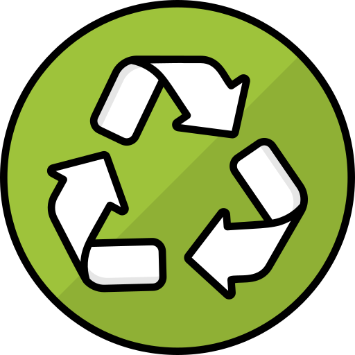
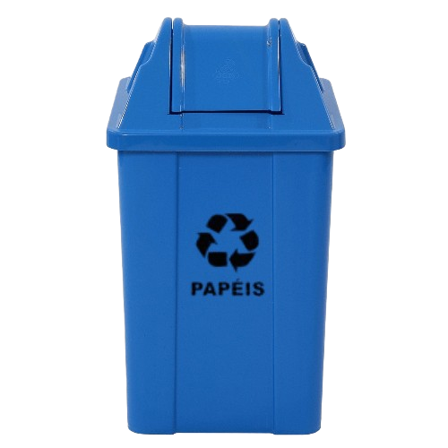
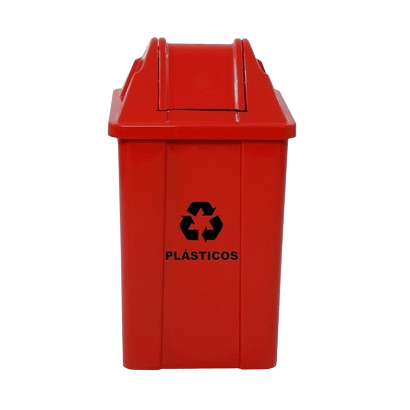
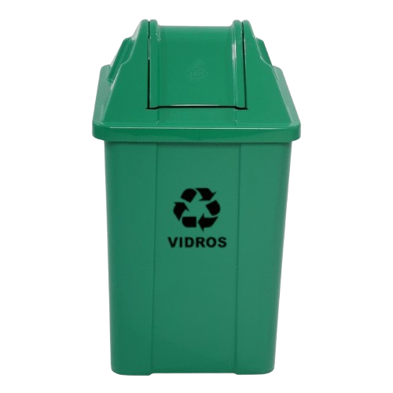
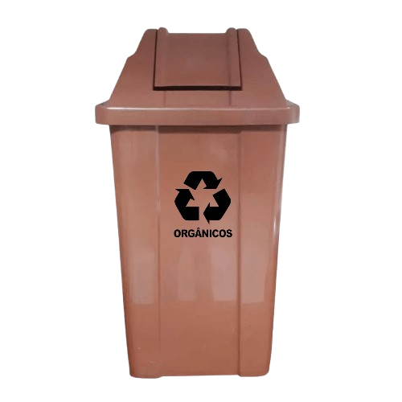

Separar o lixo ajuda a reduzir a poluição, economiza recursos naturais e diminui o descarte em
aterros. É um gesto simples com grande impacto ambiental.


Lixeira Azul
Descartar: jornais, revistas, cadernos, embalagens e caixas de papel/papelão.

Lixeira Vermelha
Descartar: garrafas PET, potes de shampoo, sacolas, brinquedos e embalagens plásticas (limpas).

Lixeira Verde
Descartar: garrafas, potes, copos de vidro (sem tampa).
⚠️ Evite: espelhos, cerâmica, vidro quebrado.

Lixeira Marrom
Descartar: restos de comida, cascas, folhas, borra de café, chá, galhos.
Ideal para compostagem.
Dicas Úteis
Lave os recicláveis.
Não amasse papel e papelão.
Separe corretamente por tipo.
Nunca misture reciclável com lixo comum.
Retire tampas antes do descarte.
O que NÃO pode ser reciclado?
Vidros especiais (espelhos, temperado), cerâmica.
Fraldas, absorventes, papel higiênico usado.
Papéis sujos, engordurados ou plastificados.
Esponjas, resíduos contaminados.
Lâmpadas, pilhas, baterias e eletrônicos (devem ser descartados em locais específicos).